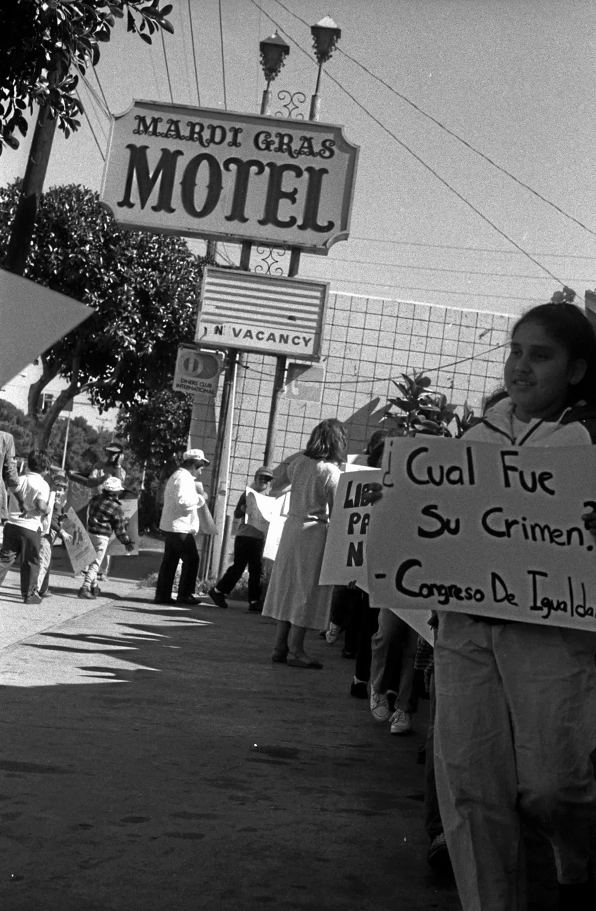

A look back at press coverage from 2014. This post is our own recap and commentary, not a reprint of the original article — the full piece is linked below.

Long before From Here to Manzanar, one of my first Long Beach exhibits looked back at an earlier chapter of detention: photographs I took in 1987 at the Mardi Gras Motel in Inglewood, which the INS was then using as a private facility to hold immigrant families.
In 2014, the Press-Telegram's Phillip Zonkel wrote about that exhibit — "INS Detention Centers" — when it went up at Hot Java coffee shop on Broadway, shown alongside two other series of mine from the same years: one on voting rights in Alabama's Black Belt, and one on police abuse in Los Angeles between 1987 and 1992.
I was on assignment for a Crenshaw District weekly when I photographed the hotel and the protest outside it. What's stayed with me since wasn't just what I saw — it was how little anyone wanted it looked at closely.
Revisiting it now, more than a decade after that exhibit and nearly four decades after I took the photograph, it still feels relevant. Read Phillip Zonkel's full 2014 article at the Press-Telegram for the rest of the story, including more on the other two series shown alongside it.
— Lisa